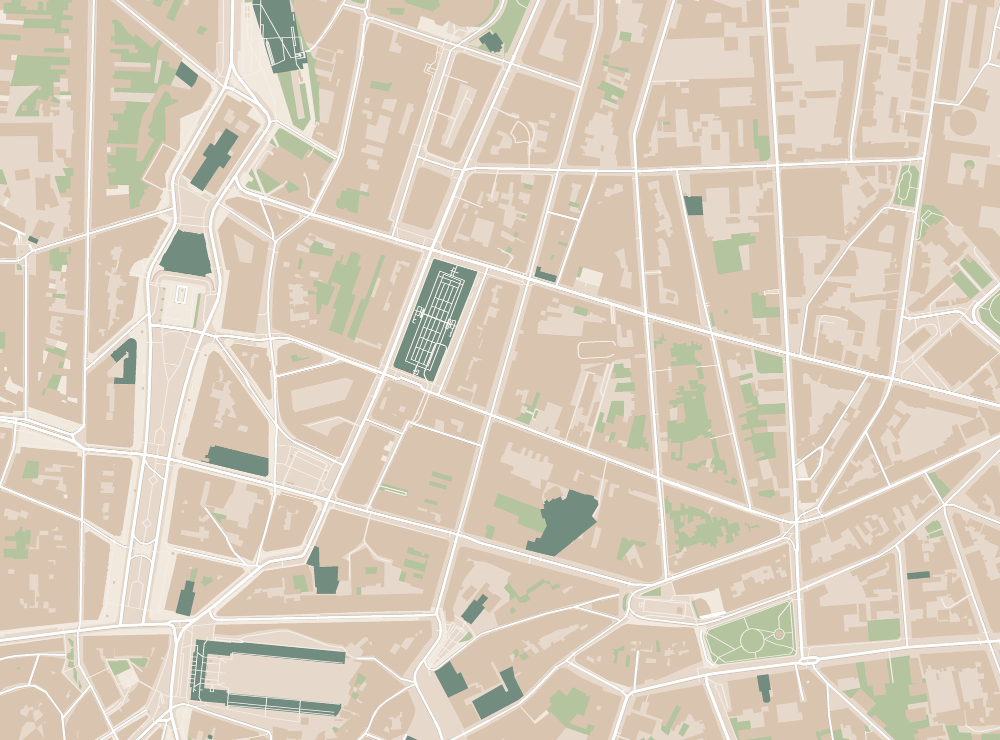

Os apartamentos Rua de Alexandre Braga
Bolhão T1
Apartamento T1 · 45 m² · até 4 pessoas · 9,8 no Booking (6 avaliações)
- 4 pessoas
- 45 m²
- 1 quarto
- 1 casa de banho
O apartamento
Um apartamento T1 num prédio dos anos 30 da Rua de Alexandre Braga, renovado em 2024: a fachada antiga ficou, e por dentro há elevador e isolamento novo. A rua é pedonal e fica em frente ao Mercado do Bolhão, com o metro a 20 m.
O quarto tem cama de casal grande e a sala um sofá-cama, para até quatro pessoas. A kitchenette tem forno, placa, máquina de lavar loiça e máquina de café; a casa de banho tem duche.
O que oferece
- Elevador
- Ar condicionado
- Aquecimento
- Wi-Fi gratuito
- Kitchenette equipada
- Máquina de lavar loiça
- Máquina de lavar roupa
- Máquina de café
- Televisão de ecrã plano
- Roupa de cama e toalhas
- Berço gratuito, a pedido
Horários e regras
- Check-in
- 16:00 – 00:00
- Check-out
- Até às 11:00
- Idade mínima
- 18 anos para reservar
- Crianças
- Bem-vindas
- Fumar
- Não
- Festas
- Não
- Animais
- Não
- Estacionamento
- Não tem
Localização

Rua de Santa CatarinaRua de Sá da BandeiraRua de Passos ManuelRua FormosaRua da AlegriaAvenida dos AliadosRua de Santo IldefonsoRua do BonjardimRua de 31 de JaneiroRua do BolhãoPraça da BatalhaRua de Fernandes TomásMTrindadeMBolhãoMAliadosSão Bento1Mercado do Bolhão2Capela das Almas3Igreja de Santo Ildefonso4Teatro Sá da BandeiraARua da Alegria, 215BBolhão T1 200 m- MMetro
- Comboio
- Edifícios conhecidos
Rua de Alexandre Braga, 26, 4000-050 Porto
-
1
Mercado do Bolhão
O mercado de bancas de fruta sob uma cobertura de vidro fica mesmo ao lado, em frente à Rua de Alexandre Braga.
Em frente à porta -
2
Capela das Almas
A fachada inteira é um painel de azulejos azuis e brancos na Rua de Santa Catarina.
2 min a pé -
3
Igreja de Santo Ildefonso
Duas torres de granito e painéis de azulejo na fachada, na Praça da Batalha.
6 min a pé -
4
Teatro Sá da Bandeira
Um teatro de fachada cor-de-rosa na Rua de Sá da Bandeira.
5 min a pé
A O outro prédio, Rua da Alegria, 215: 4 min a pé
Tempos a pé desde a porta, pelo percurso nas ruas (OpenStreetMap).
Como chegar
Bolhão T1 16 fotografias